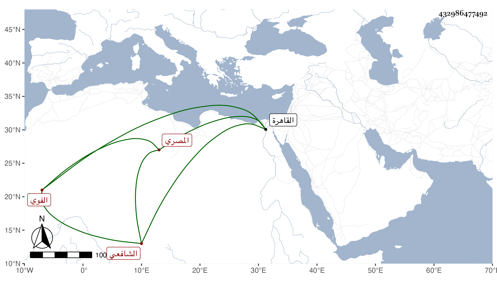

0902Sakhawi.DawLamic.ITO20230111-ara1.EIS1600.432986477492
Biography ID: 432986477492
192
أبو بكر بن محمد بن أحمد بن محمد بن محمد الزكي أبو المعالي بن البدر المصري الأصل الفوي الشافعي أخو العلاء على الماضي وأبوهما ويعرف كأبيه بابن الخلال . ولد في سنة أربع وستين وثمانمائة ومات أبوه وهو ابن ثلاث وقدم القاهرة في سنة تسع وثمانين فقرأ على الجوجري حتى مات وكذا على الزين زكريا ونحو الربع من البخاري علي وكان ينزل البردبكية وله إقبال على ابن الزمن وربما يقرأ عنده الحديث وهو سالم الفطرة له بعض إحساس وقد حج وجاور في سنة أربع وتسعين فكان يجتمع علي وقرأ على عبد المعطي المغربي في شعب الإيمان للقصري وأكثر من ملازمته وتردد لغيره ثم عاد لبلده .
